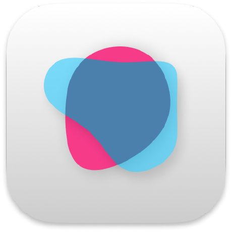
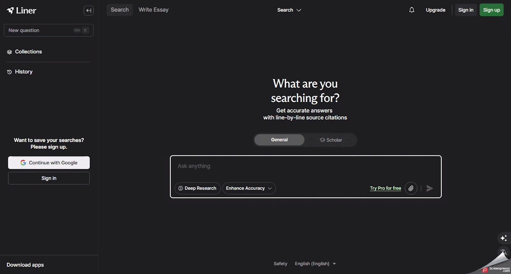

Liner AI
Auxiliar o professor na pesquisa de conteúdos confiáveis e na organização de informações para planejamento de aulas.
Ficha técnica
Visão geral
O que é o LINER ?
O LINER é uma plataforma de pesquisa e produtividade impulsionada por inteligência artificial, projetada para ajudar usuários a encontrar, organizar e utilizar informações online de forma mais eficiente. Com recursos como realce de texto, resumos automáticos, respostas com fontes confiáveis e integração com navegadores e dispositivos móveis, o LINER é ideal para estudantes, pesquisadores e profissionais que buscam otimizar seu fluxo de trabalho.
Fluxo de uso
Como utilizar o LINER
Etapa 1
Acessando o LINER
- Acesse o site oficial: https://getliner.com.
- Crie uma conta gratuita.
- Clique em “Sign Up” e registre-se usando seu e-mail ou conta do Google.
- Após o cadastro, entre na plataforma com suas credenciais para acessar todos os recursos disponíveis.

Etapa 2
Utilizando os recursos do LINER
- Pesquisa com IA: digite sua pergunta ou tópico de interesse na barra de pesquisa do LINER.
- O LINER fornecerá respostas detalhadas com fontes confiáveis, facilitando a verificação das informações.
- Realce de texto: ao navegar por páginas da web ou documentos PDF, selecione o texto que deseja destacar.
- O LINER salvará automaticamente seus destaques para referência futura.
- Resumos automáticos: após realizar uma pesquisa ou acessar um documento, o LINER pode gerar resumos automáticos, permitindo uma compreensão rápida do conteúdo.
- Organização de conteúdo: crie pastas e categorias para organizar seus destaques e pesquisas.
- Adicione tags e notas para facilitar a busca e o gerenciamento das informações salvas.

Etapa 3
Personalizando sua experiência
- Instale a extensão do LINER para Google Chrome ou Microsoft Edge para integrar a ferramenta diretamente ao seu navegador.
- Baixe o aplicativo do LINER na App Store ou Google Play para acessar seus destaques e pesquisas em qualquer lugar.